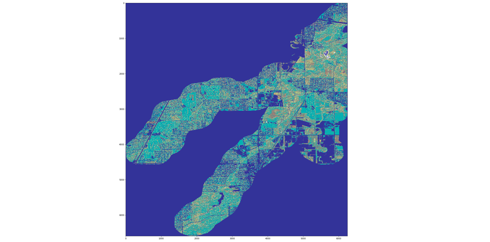

Unsupervised Segmentation of Satellite Images
In this study, we applied image processing and data analysis using multi-dimensional WorldView-2 satellite image data of 18 sites along Chicago River to examine the vegetation health. We completed unsupervised segmentation based on clustering on color channels and features; developed an interactive tool to assess plant health (based on NDVI index) at selected location of an image. My work focused on unsupervised segmentation of images, including investigating color bands distribution, using masked array to eliminate objects that are not plants, clustering based on color bands of 5X5 pixel windows, and output center location of clusters larger than 10000 ft2.
Methods: Image Processing and Data Analysis (Python GDAL, NumPy, SciPy, scikit-learn), Visualization (Matplotlib).